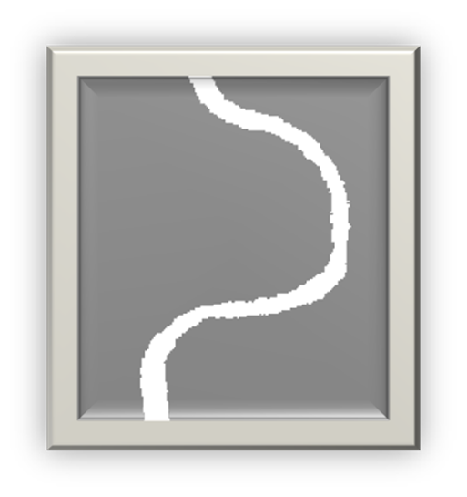
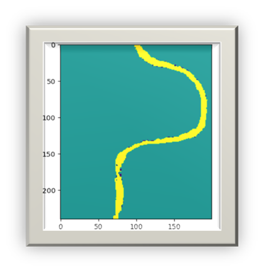

Segmentation Method
Simple and effective means for image segmentation where
different structures have contrasting intensities
Image Conversion
Converts grayscale image to binary image based on intensity
threshold value
Output Classification
Pixels with luminance greater than threshold → Value 1
(Green)
Pixels with luminance less than threshold → Value 0 (Yellow)
Pixels with luminance less than threshold → Value 0 (Yellow)
Threshold Range
Threshold specified in range [0, 1], relative to signal
levels possible for image class
THRESHOLDING VISUALIZATION

Threshold: 0.5

River (1)
Background (0)